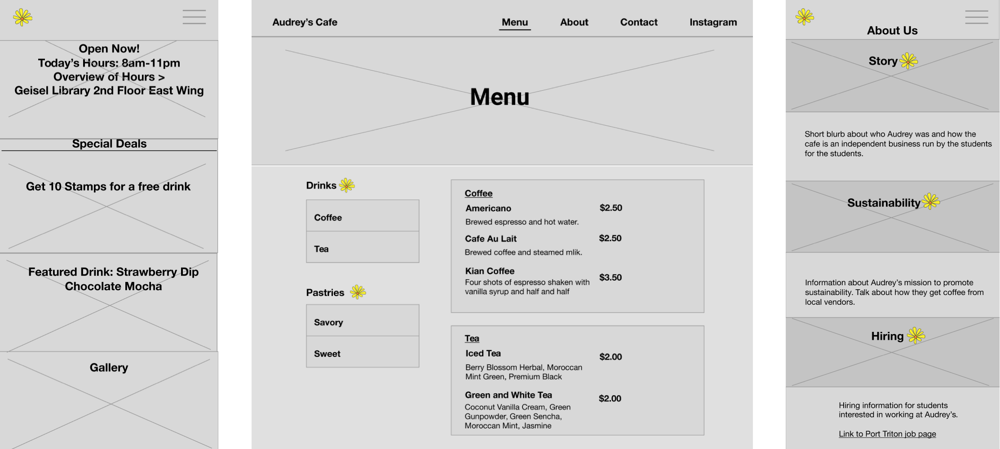

Competitive Analysis
My team wanted the website to tell Audrey's story. We gained inspiration by looking to competitors that brought out their business's character and values through their branding.

Audrey's is a cozy cafe modeled after the whimsy of Dr. Seuss and is located at the heart of the Geisel Library on UC San Diego's campus. My team saw an opportunity to help them promote their business by designing and developing a website after understanding the needs of our client and its customers.
I worked on a team with one other designer and two developers. I mainly led the UI design and visual design of the website, and helped with styling for development.
Role: UX and Visual Designer
Tools: Sketch, Invision, Figma
Skills: user research, wireframing, HTML & CSS
Collaborators: Grant Chinn, Angelia Lin, Kristen Chan
We met with our client often to ensure that we were on the same page in terms of design decisions and content to be displayed on the website. Our client emphasized a couple main goals she wanted to achieve through the website:
We looked to gain insights about what customers needed when they're browsing through the site while also taking into account the needs of our client. Our main target audience were students so we interviewed 11 students with different coffee drinking habits and broke them down into three personas.
My team wanted the website to tell Audrey's story. We gained inspiration by looking to competitors that brought out their business's character and values through their branding.
We used Figma to collaborate on mocking up initial wireframes. Drawing inspiration from our competitive analysis, We wanted to focus on establishing a welcoming and warm atmosphere by showcasing images of the space and friendly staff interacting with customers.

Audrey's isn't a typical hipster coffee house so the visual look and graphics of the website is not conventional compared to other coffee shop sites. When customers first go on the site, we wanted them to get a feeling of whimsy, color, and fun.
Because we weren't able to use Dr. Seuss related characters or specific storybook elements due to copyright reasons, we had to get creative. We drew colors from his truffula tree designs, and used black borders to emulate a similar storybook feel.
Our final designs gravitated from our initial wireframes. For example, we decided we wanted to break the content into more readable chunks so that it was easier to scan on the go. This would better accomodate our Quick Fix persona, who makes up the majority of the customers. Our other design decisions include: